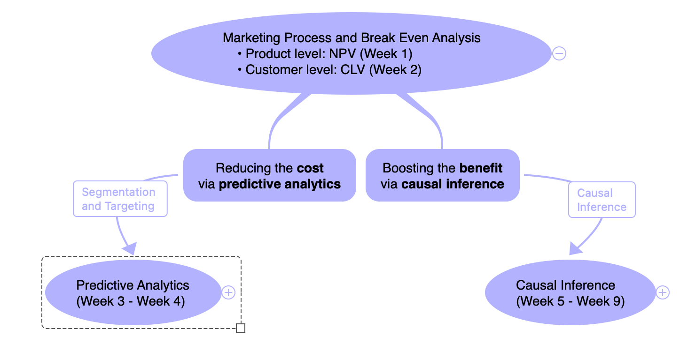
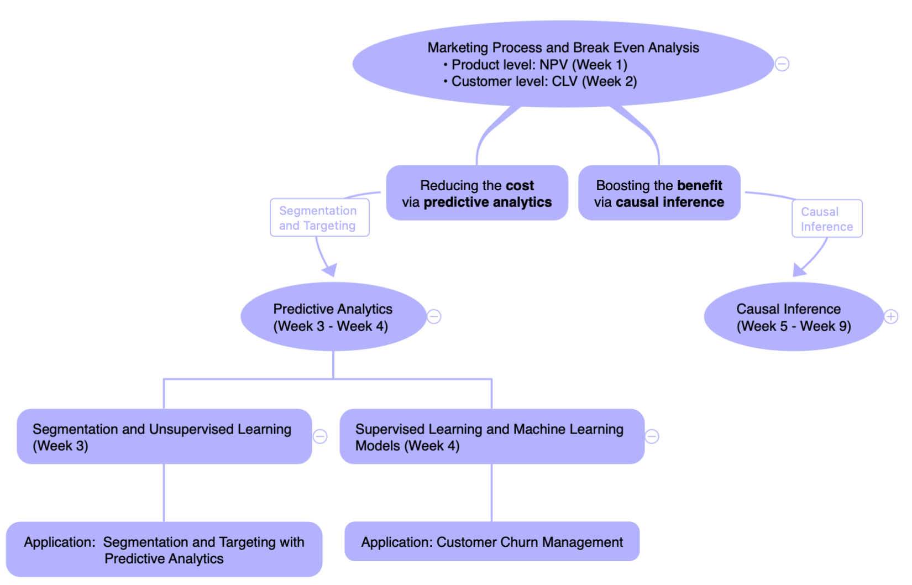
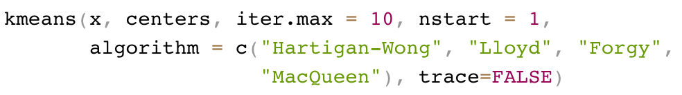

Class 7 Predictive Analytics for STP (I): Unsupervised Learning
1 Overview of Predictive Analytics
1.1 Our Journey So Far
The core of any business decision is break-even analysis (cost-benefit analysis)
- BEQ; NPV; CLV (Week 1 and Week 2)
For better profitability management, we can work on either reducing the cost or boosting the benefit.

1.2 Roadmap of Predictive Analytics
- In Weeks 3 and 4, we will learn how to utilize predictive analytics to reduce marketing costs and improve marketing efficiency

1.3 Learning Objectives
Understand the concept of statistical learning
Understand the concept of unsupervised learning and how to apply clustering analyses for customer segmentation
2 Predictive Analytics
2.1 Types of Predictive Analytics
- Unsupervised Learning
- Only observe X => Want to uncover unknown subgroups
- Supervised Learning
- Observe both X and Y => Want to predict Y for new data
- Reinforcement Learning
- Rewards and punishments => Learn the best decision rules
- Dynamic Coupon Targeting Using Batch Deep Reinforcement Learning: An Application to Livestream Shopping
In Term 2, you will learn predictive analytics models systematically. By then, think about how those techniques can be applied back to these case studies.
2.2 Types of Predictive Analytics

3 Segmentation with Unsupervised Learning
3.1 Customer Segmentation
Segmentation is the process of dividing customers into meaningful groups based on any characteristics relevant to design and execution of your marketing strategy. It assumes that different customer groups offer different levels of value to the company and/or require different marketing programs to succeed with (e.g., based on different goals and needs).
3.2 Conventional Ways for Customer Segmentation
Customer value segmentation is for targeting decisions based on customers’ potential long-term financial and strategic value to your company.
Benefit segmentation is for positioning and marketing mix design on the basis of customer and consumer goals or usage, the needs, wants, problems and the trade-offs they are willing to make across benefits (e.g., price vs. quality).
Psychographic segmentation is for positioning and marketing mix design based on the psychology of the customer and consumer, including attitudes, identity, lifestyle, personality, etc.
Demographic segmentation uses variables such as age, gender, income, family life cycle, educational qualification, socio-economic status, religion, company size and income, etc. These serve as proxies for goals, preferences or psychographics, as well as to characterize segments for marketing mix decisions.
Conventional segmentation methods require heavy human judgments. A more sensible way is to “let the data speak”.
3.3 Commonly Used Clustering Algorithms
- K-means clustering
- The number of clusters need to be pre-specified
- Hierarchical clustering
- Observations are clustered in a tree-structured graph or dendrogram. No need to pre-determine the number of clusters.
3.4 K-Means Clustering
K-means clustering is one of the most commonly used unsupervised machine learning algorithms for partitioning a given data set into a set of k groups (i.e. k clusters), where k represents the number of groups pre-specified by the analyst.
It can classify customers into multiple segments (i.e., clusters), such that customers within the same cluster are as similar as possible, whereas customers from different clusters are as dissimilar as possible.
- Input: customer data (characteristics of interest) and the number of clusters
- Output: clusters
- Let \(C_1 , C_2 , · · · , C_k\) be the clusters
- Every customer is categorized to only one of the clusters
3.5 K-Means Clustering: Intuition

3.6 Implementation of K-Means in R for Tesco
- Decide to do customer segmentation based on total spending and income

x: data with selected variables to apply K-meanscenters: number of clustersiter.max: the maximum number of iterations allowednstart: how many random sets should be chosenalgorithm: which algorithm to choose; default often workstrace: do you want to trace intermediate steps?
3.7 Implementation of K-Means in R for Tesco
Need to re-scale the two variables using
scale(), because the two variables are of very different scales- This is extremely important!
set.seed()is to allow replication of results. Refer to this data camp tutorial for more details.
3.8 Implementation of K-Means in R for Tesco
- Examine the returned object,
result_kmeans
List of 9
$ cluster : int [1:2000] 1 2 1 2 2 1 2 2 2 2 ...
$ centers : num [1:2, 1:2] 0.95 -0.663 1.022 -0.713
..- attr(*, "dimnames")=List of 2
.. ..$ : chr [1:2] "1" "2"
.. ..$ : chr [1:2] "Income" "total_spending"
$ totss : num 3998
$ withinss : num [1:2] 726 553
$ tot.withinss: num 1280
$ betweenss : num 2718
$ size : int [1:2] 822 1178
$ iter : int 1
$ ifault : int 0
- attr(*, "class")= chr "kmeans"cluster: A vector of integers (from 1:k) indicating the cluster to which each point is allocated.centers: A matrix of cluster centers.totss: The total sum of squares.withinss: Vector of within-cluster sum of squares, one component per cluster.tot.withinss: Total within-cluster sum of squares, i.e. sum(withinss).betweenss: The between-cluster sum of squares, i.e. $totss-tot.withinss$.size: The number of points in each cluster.
3.9 Implementation of K-Means in R for Tesco
- Visualize the clusters
We need 2 packages
clusterandfactoextraUse
fviz_cluster()to generate visualizations
3.10 Implementation of K-Means in R for Tesco
- Determine the optimal number of clusters using statistical criteria
- Gap Method

3.11 Implementation of K-Means in R for Tesco
- Determine the optimal number of clusters using statistical criteria
- Silhouette method
3.12 Implementation of K-Means in R for Tesco
- Compare the CLV in the two segments, and decide which segment to serve.
- This is a general idea of segmentation and targeting using unsupervised learning
- Finish this exercise after class
3.13 Pros and Cons of K-means Clustering
Advantages
Easy to implement and explain
Computationally efficient
Drawbacks
As the number of variable increases, curse of dimensionality problem occurs
Sensitive to outliers and initial seeds
3.14 After-Class Readings
- Useful source: K-means Cluster Analysis